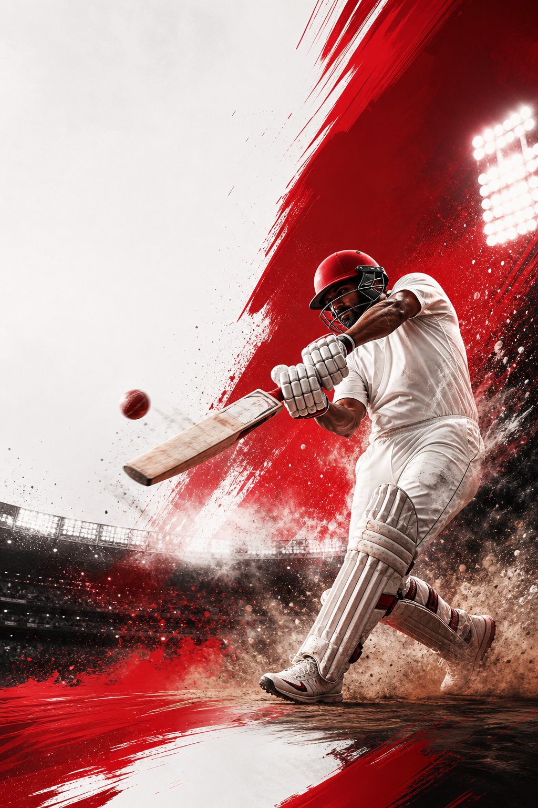

India vs Australia
IND 184/4 (17.2) - Chase 201
Sports bulletin app concept
Designed around cricket and football first, MatchBrief blends breaking urgency, cleaner score modules, and a sharper editorial stack so fans can move from live state to context without getting lost in clutter.
IND 184/4 (17.2) - Chase 201
2 - 1 - 73'
Context-first explainers, not just score spam
Cricket

MatchBrief leans into headline clarity, visible match state, and editorial trust. The concept keeps the live layer in view while cutting back the homepage clutter fans usually ignore.
Football
Football products already cover live scores well. The real gap is making Indian and global football coverage feel editorially alive without burying the match state under too much data chrome.
Project Outputs
Social pulse
Free X timeline embed — no API key required
Official embeds from X are the free path for tweets on this page. Swap the profile or list URL below for ISL, Premier League, or journalist lists. Custom tweet scraping is intentionally avoided.